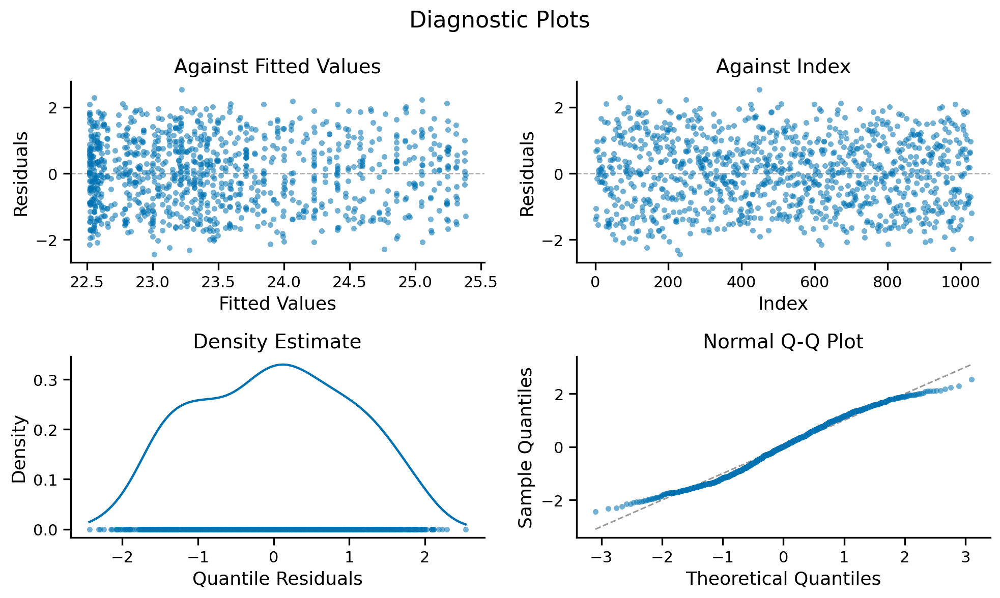
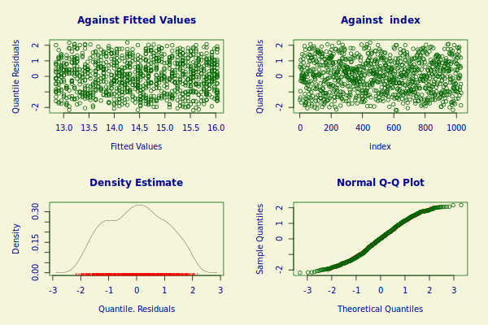

Model Diagnostics and Summary#
Model Summary#
Access detailed model summary information including parameter estimates, standard errors, and model fit statistics.
Examples:
from rpy2.robjects.packages import importr
import rpy2.robjects as robjects
base = importr('base')
model_summary = base.summary(robjects.r[model_name])
print(model_summary)
******************************************************************
Family: c("SHASH", "Sinh-Arcsinh")
Call: gamlss(formula = y_thickness1 ~ pvc(age, by = as.factor(sex)) +
re(random = ~1 | as.factor(site)), sigma.formula = ~pvc(age) +
re(random = ~1 | as.factor(site)), nu.formula = ~1, tau.formula = ~1,
family = SHASH(), data = model_shash_traindata, method = RS(50))
Fitting method: RS(50)
------------------------------------------------------------------
Mu link function: identity
Mu Coefficients:
Estimate Std. Error t value Pr(>|t|)
(Intercept) 23.5013 0.0325 723 <2e-16 ***
---
Signif. codes: 0 ‘***’ 0.001 ‘**’ 0.01 ‘*’ 0.05 ‘.’ 0.1 ‘ ’ 1
------------------------------------------------------------------
Sigma link function: log
Sigma Coefficients:
Estimate Std. Error t value Pr(>|t|)
(Intercept) 1.0144373 0.0690711 14.687 <2e-16 ***
pvc(age) 0.0001134 0.0013107 0.087 0.931
---
Signif. codes: 0 ‘***’ 0.001 ‘**’ 0.01 ‘*’ 0.05 ‘.’ 0.1 ‘ ’ 1
------------------------------------------------------------------
Nu link function: log
Nu Coefficients:
Estimate Std. Error t value Pr(>|t|)
(Intercept) 0.75353 0.03467 21.74 <2e-16 ***
---
Signif. codes: 0 ‘***’ 0.001 ‘**’ 0.01 ‘*’ 0.05 ‘.’ 0.1 ‘ ’ 1
------------------------------------------------------------------
Tau link function: log
Tau Coefficients:
Estimate Std. Error t value Pr(>|t|)
(Intercept) 0.73748 0.03288 22.43 <2e-16 ***
---
Signif. codes: 0 ‘***’ 0.001 ‘**’ 0.01 ‘*’ 0.05 ‘.’ 0.1 ‘ ’ 1
------------------------------------------------------------------
NOTE: Additive smoothing terms exist in the formulas:
i) Std. Error for smoothers are for the linear effect only.
ii) Std. Error for the linear terms may not be reliable.
------------------------------------------------------------------
No. of observations in the fit: 1030
Degrees of Freedom for the fit: 10.71486
Residual Deg. of Freedom: 1019.285
at cycle: 50
Global Deviance: 3080.331
AIC: 3101.761
SBC: 3154.664
******************************************************************
Estimate Std. Error t value Pr(>|t|)
(Intercept) 2.350126e+01 0.032503578 723.03612057 0.000000e+00
(Intercept) 1.014437e+00 0.069071123 14.68685157 1.780477e-44
pvc(age) 1.134206e-04 0.001310732 0.08653226 9.310602e-01
(Intercept) 7.535345e-01 0.034665729 21.73715903 1.624022e-86
(Intercept) 7.374761e-01 0.032883355 22.42703385 5.161841e-91
Random Effects Analysis#
Examine random effects parameters to understand model shrinkage and site-specific variations.
Examples:
# Analyze random effects parameters
comparison = robjects.r('''
# Create a comparison list of key parameters
list(
# 1. Lambda value - high value indicates random effects shrinkage
lambda = model_shash$mu.lambda,
# 2. Effective degrees of freedom
mu_df = model_shash$mu.df,
# 3. Number of site parameters vs effective df
site_params = length(model_shash$mu.coefficients[grep("site", names(model_shash$mu.coefficients))]),
# 4. Site coefficient values (to check shrinkage)
site_values = model_shash$mu.coefficients[grep("site", names(model_shash$mu.coefficients))],
# 5. Whether random effects were specified
random_specified = grepl("random", capture.output(model_shash$call))
)
''')
print(comparison)
R[write to console]: In summary.gamlss(list(family = c("SHASH", "Sinh-Arcsinh"), parameters = c("mu", :
R[write to console]: summary: vcov has failed, option qr is used instead
$lambda
[1] 324.1604994 0.9997195
$mu_df
[1] 7.711527
$site_params
[1] 1
$site_values
re(random = ~1 | as.factor(site))
NA
$random_specified
[1] FALSE TRUE TRUE FALSE
gamlss_main.Gamlss.
plot_diagnostics#
plot_diagnostics(save_image=None, file_name=None, dpi=300, save_pdf=False, axs=None)
Creates a 2x2 grid of diagnostic plots including: (1) Residuals vs Fitted Values: Checks for heteroscedasticity and non-linearity, (2) Residuals vs Index: Identifies systematic patterns or outliers, (3) Density Estimate: Shows distribution of quantile residuals with rug plot, (4) Normal Q-Q Plot: Assesses normality of residuals.
Parameters:
save_image : str, optional
Folder path to save the image (default is None)
file_name : str, optional
File name for the saved image (default is None)
dpi : int, default=300
DPI for the saved image
save_pdf : bool, default=False
If True, additionally saves a vector .pdf copy alongside the primary saved image.
axs : 2x2 array-like of matplotlib.axes.Axes, optional
Existing 2x2 grid of Axes to draw the four panels into, for composing this into your own figure, e.g. fig, axs = plt.subplots(2, 2); model.plot_diagnostics(axs=axs).
If provided, draws into it instead of creating its own figure, and skips plt.show()/saving (you control display and saving). If None (default), behavior is unchanged.
Returns:
(fig, axs) : (matplotlib.figure.Figure, numpy.ndarray)
The Figure and the 2x2 array of Axes used, so you can keep customizing after this call (e.g. axs[0, 0].set_ylim(...), fig.savefig(...)).
Examples:
gamlss_model.plot_diagnostics();

******************************************************************
Summary of the Quantile Residuals
mean = 0.004704422
variance = 1.07954
coef. of skewness = -0.00136674
coef. of kurtosis = 2.114605
Filliben correlation coefficient = 0.9915867
******************************************************************
2
gamlss_main.Gamlss.
gamlss_diagnostic_plot#
gamlss_diagnostic_plot()
Generates R’s built-in GAMLSS diagnostic plots and displays them in the notebook. Provides additional diagnostic information beyond the Python implementation.
Takes no arguments beyond the fitted model itself.
Returns:
None : None
Displays R’s native diagnostic plots
Examples:
# Display R's native diagnostic plots
gamlss_model.gamlss_diagnostic_plot()
******************************************************************
Summary of the Quantile Residuals
mean = 0.004704422
variance = 1.07954
coef. of skewness = -0.00136674
coef. of kurtosis = 2.114605
Filliben correlation coefficient = 0.9915867
******************************************************************
